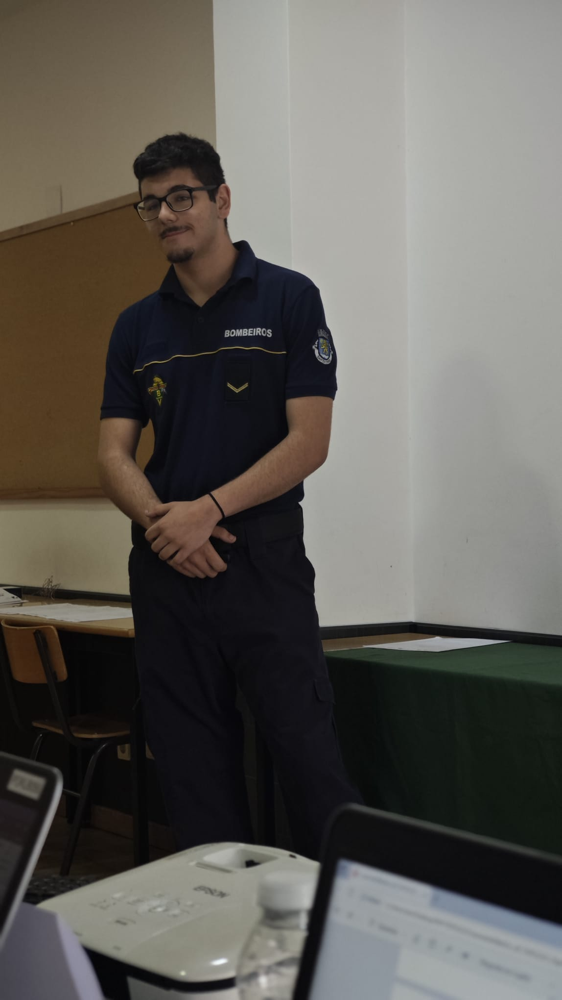

DriveGest
Sistema de gestão para escolas de condução com alunos, estados e comunicações.
Node.js · SQLite · JavaScript
👋 Olá, eu sou o Leonardo
Crio websites, aplicações e sistemas digitais modernos, com foco em design, funcionalidade e problemas reais.

Sobre mim
Sou programador com interesse em desenvolvimento web, mobile e sistemas de gestão. Tenho experiência com projetos práticos como websites institucionais, aplicações mobile, dashboards e sistemas para empresas.
Stack
Portfólio
Sistema de gestão para escolas de condução com alunos, estados e comunicações.
Aplicação mobile com incêndios ativos, meteorologia, risco de incêndio e contactos úteis.
Website institucional moderno, responsivo e com foco em comunicação clara.
Contacto
Estou disponível para projetos, melhorias em websites e desenvolvimento de soluções digitais.
Ver GitHub